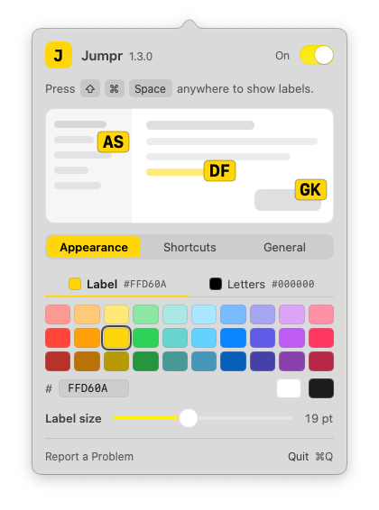
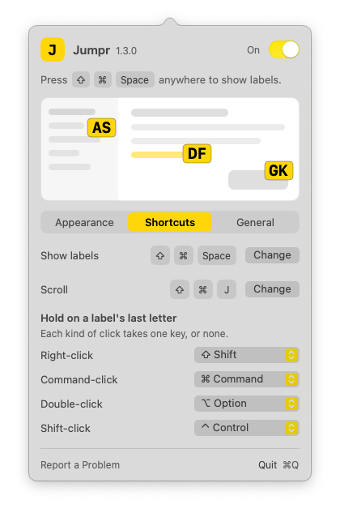
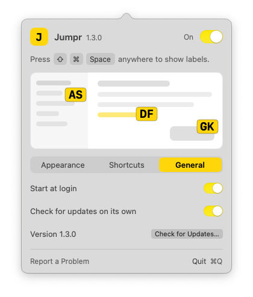

Click Jumpr's menu bar icon to open the panel. A click anywhere else closes it.
At the top
- The switch turns Jumpr on and off. Off is a pause: the hotkey does nothing.
- The preview shows how your labels look.
The three tabs
| Tab | What it holds |
|---|---|
| Appearance | Label color, letter color and label size |
| Shortcuts | The hotkey, the scroll shortcut, and the key for each kind of click |
| General | Start at login, whether Jumpr checks for updates on its own, and Check for Updates… |
Appearance
One palette serves both colors. Choose Label or Letters above it, then a color. Auto letters are black or white, whichever reads better on the label.

Shortcuts
A shortcut must include ⌘, ⌃ or ⌥. For each kind of click, choosing a key another click already has swaps the two.
Heads up
Keep the two shortcuts different. If the hotkey and the scroll shortcut are the same, the hotkey wins and scroll mode can't be reached.

General
Start at login is off until you turn it on. Updates explains the update check.

At the bottom
- Report a Problem. See Reporting a problem.
- Quit closes Jumpr.